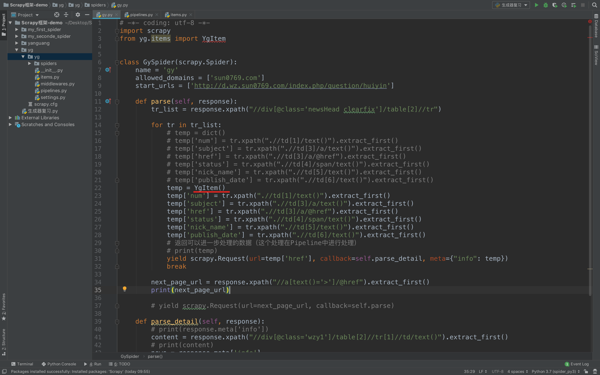

案例：阳光工程-3-BaseItem
items.py中定义BaseItem
1. BaseItem能够做什么
- 定义item即提前规划好哪些字段需要抓取，防止手误；配合注释一起可以清晰的知道要抓取哪些字段；没有定义的字段不能抓取；在字段不多的情况下很少使用；可以在爬虫中自定义数据字典来代替
- 使用scrapy的一些特定组件需要BaseItem做支持，如scrapy的ImagesPipeline管道类，百度搜索了解更多
- 在python大多数框架中，大多数框架都会自定义自己的数据类型(在python自带的数据结构基础上进行封装)，目的是增加功能，增加自定义异常
- 如response.xpath()的返回对象具有extract()等方法
2. 定义BaseItem
在items.py文件中定义要提取的字段：
import scrapy
class YgItem(scrapy.Item):
# define the fields for your item here like:
# name = scrapy.Field()
num = scrapy.Field() # 序号
subject = scrapy.Field() # 主题
href = scrapy.Field() # 内容超链接
status = scrapy.Field() # 状态
nick_name = scrapy.Field() # 用户昵称
publish_date = scrapy.Field() # 发布日期
content = scrapy.Field() # 问题详情
3. 使用BaseItem
BaseItem定义后需要在爬虫中导入并且实例化，之后的使用方法和使用字典相同

4. 注意
- python中的导入路径要诀：从哪里开始运行，就从哪里开始导入